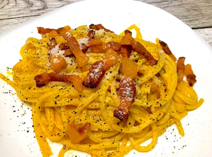

Tonnarelli alla carbonara
La pasta alla carbonara è un piatto tipico della tradizione Italiana e più in particolare del Lazio.
Esistono diverse ipotesi sull'origine della ricetta e, come spesso accade in questo ambito, non si hanno certezze
anche se le ultime ricerche storiche hanno portato alla tesi che essa risalga al periodo immediatamente successivo alla fine dell'occupazione nazista a Roma.
Fu creata grazie alla combinazione delle razioni militari portate dagli eserciti alleati, che comprendevano uova e bacon, con la pasta italiana.

Ingredienti:
- 320 g di tonnarelli
- 5 tuorli
- 300 g di guanciale stagionato
- 50 g di pecorino romano DOP
- sale q.b.
- pepe q.b.
Preparazione:
- Mettere il sale nella pentola ed iniziare a cuocere i tonnarelli
- Pulire il guanciale, togliere la cotenna e metterlo a rosolare finchè non diventa d'orato
- Prendere una boule e inserirci i 5 tuorli, il pecorino romano, il pepe e il grasso del guanciale e
continuare a mescolare finchè non si ottiene una crema omogenea
- Quando i tonnarelli sono quasi pronti, finire la cottura nella padella in cui si è cotto il guanciale e amalgamere con la crema a fuoco spento
Sciopa